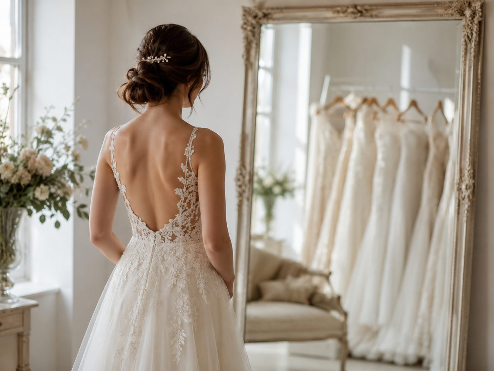
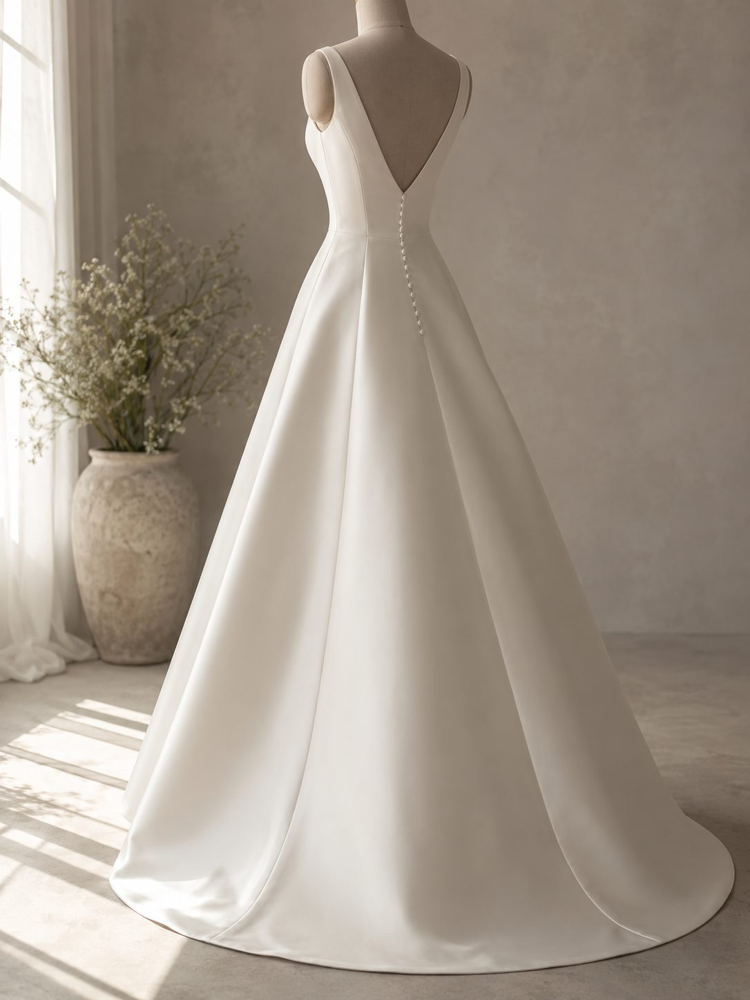

二の腕をカバーするドレス
隠すのは、
逃げではない。
二の腕が気になるとき、体を変えるだけが方法ではありません。袖のデザインや小物で、見え方そのものを選ぶこともできます。

先に結論です。袖ありやケープは、二の腕が気になる人の選択肢として十分に成り立ちます。ただし袖の端の位置や素材で印象が変わるので、試着のときに写真で比べてください。
デザインごとの二の腕の見え方
| デザイン | 二の腕の見え方 | 向いている人 |
|---|---|---|
| オフショルダー | 腕の付け根が隠れ、肩のラインが出る | 肩まわりは気にならない人 |
| フレンチスリーブ | 二の腕の上のほうが隠れる | 揺れる部分を少し隠したい人 |
| ロングスリーブ（レース） | 腕全体がやわらかく覆われる | 秋冬の式、教会式 |
| ケープ・ボレロ | 挙式だけ羽織るなど、外して変えられる | 挙式と披露宴で印象を変えたい人 |
| ビスチェ＋ロンググローブ | 肘から先が隠れ、二の腕が短く見える | 手元の印象も上げたい人 |
袖の「端」がどこに来るか
見落とされやすいのが袖の端の位置です。二の腕のいちばん太い位置で袖が終わると、そこに目が行きやすくなります。少し上か、少し下で終わるものを選ぶと、すっきり見えやすくなります。
試着で見ること
1
正面だけでなく斜め45度で撮る写真に残る角度は正面より斜めのほうが多いです
2
腕を上げた状態も確認する乾杯や手を振る場面で袖が動きます
3
ケープは外した状態も撮る披露宴で外すなら、両方の見え方を比べておきます
4
季節と会場の温度を考えるロングスリーブは夏の屋外では暑くなります

あわせて読みたいドレスの形で、鍛える場所が変わるシルエット別の準備隠しながら整える
袖で隠す場合でも、時間があれば姿勢や運動で整えておくと、写真の印象が上がります。ドレスと体づくりは、どちらか一方を選ぶ必要はありません。詳しくは二の腕は3ヶ月で変わるのかにまとめています。